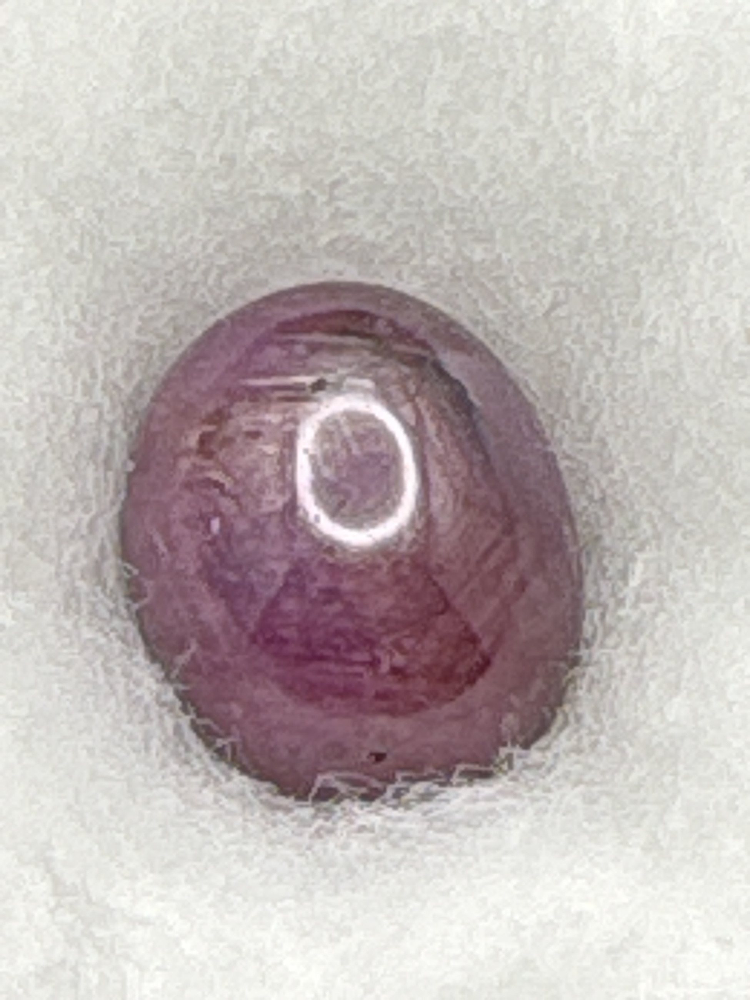

The Gem Drawer › No. 51

A translucent lavender cabochon with no play-of-color.
| Catalogue no. | #51 |
|---|---|
| As labeled | Opal (labeled "Ethiopian Opal" - appears to be common/potch opal, no visible play-of-color, see notes) |
| Shape / cut | Oval cabochon |
| Weight | 3.23 ct |
| Measurements | Not recorded |
| Colour | Translucent lavender/purple |
| Clarity / condition | Not recorded |
Interested in this stone, or in the collection as a whole? Terry VanWormer can answer questions about it.
Click here to inquireor email Terry directly at maxrebo34@gmail.com